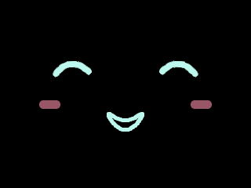
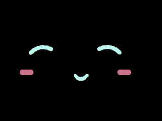
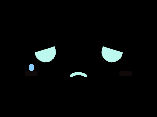
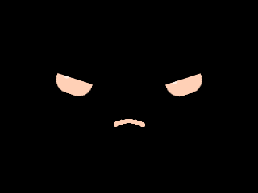

FACE LAB / FIRMWARE RENDER
固件 LVGL 渲染图集
实际固件 LVGL 渲染片段，非 LCD 实拍；仅脸部，不含 HOME/TUNE 和全局警告红框。
静态姿态 · 320 × 240 原始尺寸
暂停时显示对应静态姿态，播放时切回动画片段。默认遵循系统“减少动态”设置。

开心

撒娇

委屈

提醒周期

Canvas 动作设计与此图集来自两份独立实现，不保证像素一致。图集以 320 × 240 显示，不放大原始图像。